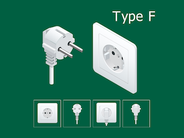
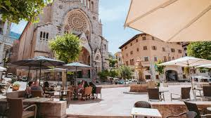
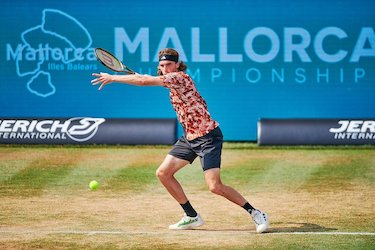

In 2025, the annual tennis excursion is to Mallorca to watch some of their tournament at the Mallorca Country Club
As for previous eBooks, this eBook is divided into 3 main sections, namely:
If I think of any other stuff I'll put it into appendices at the end. So, without further ado, let's crack on!
Well, before we start our trip, there are a few things to think about and do. I have split these up as follows:
I have also included as an Appendix what I envisage packing for the trip (excluding clothing - I am sure you can make up your own minds about clothing!).
We are visiting Malllorca in late June – a very popular tourist time of year.
The weather is likely to be pleasant and warm during the day. The evenings will be cooler, so take a light jacket or jumper for the evenings. We are going to be in Mallorca for a week and the average temperature for late June is 25°C. The average rainfall for June is 10mm, so we are unlikely to need to take an umbrella.
Mallorca is an island of approx. 960 thousand people and nearly 3640 square kilometres in size. It is the largest of the Balearic Islands and is located in the Mediterranean Sea. The island is 170 miles east of the Spanish mainland. The island is 70 miles long and 50 miles wide. The capital of Mallorca is Palma (where we will stay and to watch the tennis). The island is known for its beaches, sheltered coves, limestone mountains and Roman and Moorish arcitecture / ruins.
If our normal innoculations are up to datre we shouldnt need additional innoculations to visit Mallorca.
Hampton GP surgery gave me two web sites to check:
These sites give advice on what vaccinations are recommended for each country. For Mallorca, they say that there are no vaccinations required. However, they do recommend that we are up to date with our routine vaccinations including MMR, diphtheria-tetanus-pertussis, varicella (chickenpox), polio, and your yearly flu shot.
Mallorca is in a different time zone to the UK - it is 1 hour in front of us.
Your passport should be valid for the proposed duration of your stay. No additional period of validity beyond this is required. There should be at least 2 completely blank pages left in your passport as well.
We are not travelling any significant distance by plane. Flight details are shown below. The remainder of the holiday travel within Mallorca will be by road and rail (and maybe a short boat ride).
| Air Journey | Distance (miles) |
|---|---|
|
Outbound 21st June EasyJet booking reference: K8RTMTP Flight EZY6629 from Birmingham to Palma Depart: 1715, Arrive: 2045 |
916 |
| Return 28th June EasyJet booking reference: K8RTMTP Flight EZY6630 from Palma to Birmingham Depart: 2135, Arrive: 2310 |
916 |
| TOTAL air miles | 1832 |
N.B.
We will arrive in Palma about 9pm. So we have to make our own way from Palma International airport into the centre of Palma and our hotel. Fastest way would be a taxi approximately £45–50 (one way)
Our hotel is the Hotel Almudaina, which is in the centre of Palma, is where we will be staying until the morning of the 28th It is about 10 minutes walk from the cathedral and the old town. The hotel is also close to the marina and the beach. The hotel is a 4–star hotel and is said to have a bar. The hotel has free wifi. Our rooms are booked on a room only basis so we will have to find our own breakfasts and evening meals.
As normal, Lesley and I will each bring printed and electronic copies of our journey details.
Mallorca has the Euro (€) as its unit of currency. We will have our FairFX cards initially topped up for when we land and will top them up thereafter as and when we need to. We will also have some cash in Euros for when we land. We will also have an alternate credit card with us for emergencies.
Between now and our departure we will keep an occasional eye on the Euro exchange rate to try and ensure we get the best deals e.g. when topping up our FairFX cards.
In our Euros (€) we have our cash in the following note denominations:
Tipping is usually handled as in the UK, but it is not obligatory. If you are happy with the service you can leave a tip. If you are not happy with the service you can also leave a tip, but it is not obligatory.
Nothing special here. We will be able to buy duty free goods at Birmingham airport before we leave the UK. We will also be able to buy duty free goods at Palma airport on our return to the UK.
On the return to the UK, these are selected allowances:
In Mallorca, free wifi abounds in many stores and cafes and tourist locations. Our hotel has free wifi as well. Depending on the mobile phone provider, we may be able to use our phones in Mallorca. We will check with our mobile phone provider before we go.
We may or may not be able to print our boarding cards for our return flight to the UK when we are away. As for some previous holidays we may be able to download the airline app and just have a downloadable boarding pass.
The voltage in Mallorca is 230V and the frequency is 50Hz. The plugs in Mallorca are the two round pin type - type F. The UK uses 230V and 50Hz and the plugs are the three square pin type.
 |
| Type F Plug and Socket |
So we will need travel adapters and (maybe) voltage adapters as well so we can have our 4-way blocks plugged in at our accommodation.
Flight departure time from Birmingham Airport is approx. 1715 so we will probably get to the airport between 1430 and 1500 to check in, allowing extra time for security checks.
We will arrive in Palma at approx. 2045 local time and will have to make our own way to our hotel.
From today, we have to amuse ourselves until Thursday 26th when the tennis starts. Suggestions to occupy ourselves include:

The train journey from Palma to Sóller in Mallorca, Spain is a scenic ride on a historic wooden train. The train travels through the city, countryside, and the Serra de Tramuntana mountains.
What to expect:
How to book: You can book your train via the TrendeSoller website
What to do in Sóller: Visit the Art Deco station, which has an art gallery Transfer to the 1913 tram to Port Soller Visit the Can Prunera Museum of Modernism, which has works by Picasso and Miró
Distances:
Almudaina to aquarium 10.7km 13mins by car
Almudaina to castle 2.9km 44mins walking
Almudaina to Mallorca Country Club 20.2km 21mins by car
Almudaina to Palma station 1.1km 16mins walking
Almudaina to Hotel Saratoga 300m 4mins walking
Almudaina to Caves of Drach 67km 57mins by car
Almudaina to Palma Old Town 480m 6mins walking
Almudaina to Palma cathedral 700m 10mins walking
Almudaina to Palma marina 1.1km 16mins walking
We will have to make our own arrangements for breakfast and evening meals. Maybe meeting up with others if their plans coincide with ours.
Sophie arrives in Mallorca today. She will have to make her own way from the airport to the hotel. Maybe we will have sorted out either a taxi or a bus for her to take.
N.B. Maybe leave Soller trip to one of the days when Sophie is with us – Wednesday or Friday.
Quarter finals at the Mallorca Country Club. All day ticket.

Our tennis day is quarter finals day at the Mallorca Country Club. The day starts at 11am and finishes at 7pm.
The country club is about 24 mins by car from the hotel. We will have to make our own way there and back. To get to the Country Club in Calvià, Mallorca by public transport, you can take bus lines 102, 104 or (maybe) 106. You can catch a bus at any authorized bus stop with a Balearic Islands Transport (TIB) sign. The bus stop closest to the Mallorca Country Club is the one at the entrance to the Son Ferrer urbanization.
| Name on Passport | Passport No. | Expiry Date | Blood Group |
|---|---|---|---|
| John Brinley Cable | 534663386 | 1 May 2026 | AB+ |
| Lesley Anne Cable | 556517863 | 18 February 2029 | O+ |
| Sophie Vinetta Cable | 575491003 | 11 January 2030 | A+ |
| Emily Beatrice Cable | 154332742 | 16 April 2035 | B+ |
Don't forget to weigh case – safe maximum is 20KG. Camera (in backpack) is hand luggage
Note for neighbours
N.B.
* optional – depends on the holiday
** may purchase in Duty Free at airport
*? may be packed with family toiletry bag
According to the website TripAdvisor, the best-rated coffee bars in Palma are: